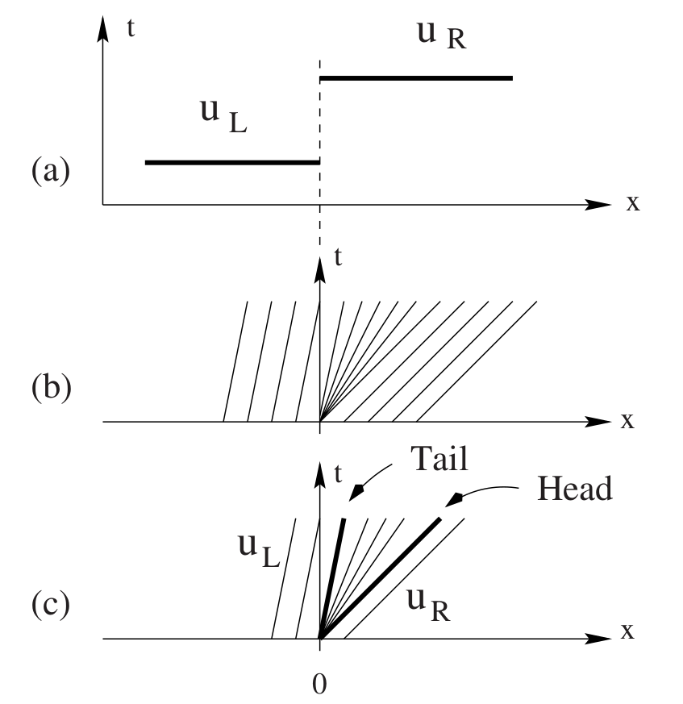

2022-11-28 Finite Volume
Contents
2022-11-28 Finite Volume#
Last time#
CEED Fluids for compressible viscous flow
Solvers
Boundary conditions
Today#
Notes on unstructured meshing workflow
Finite volume methods for hyperbolic conservation laws
Riemann solvers for scalar equations
Shocks and the Rankine-Hugoniot condition
Rarefactions and entropy solutions
using LinearAlgebra
using Plots
default(linewidth=3)
struct RKTable
A::Matrix
b::Vector
c::Vector
function RKTable(A, b)
s = length(b)
A = reshape(A, s, s)
c = vec(sum(A, dims=2))
new(A, b, c)
end
end
rk4 = RKTable([0 0 0 0; .5 0 0 0; 0 .5 0 0; 0 0 1 0], [1, 2, 2, 1] / 6)
function ode_rk_explicit(f, u0; tfinal=1., h=0.1, table=rk4)
u = copy(u0)
t = 0.
n, s = length(u), length(table.c)
fY = zeros(n, s)
thist = [t]
uhist = [u0]
while t < tfinal
tnext = min(t+h, tfinal)
h = tnext - t
for i in 1:s
ti = t + h * table.c[i]
Yi = u + h * sum(fY[:,1:i-1] * table.A[i,1:i-1], dims=2)
fY[:,i] = f(ti, Yi)
end
u += h * fY * table.b
t = tnext
push!(thist, t)
push!(uhist, u)
end
thist, hcat(uhist...)
end
┌ Info: Precompiling Plots [91a5bcdd-55d7-5caf-9e0b-520d859cae80]
└ @ Base loading.jl:1664
WARNING: method definition for == at /home/jed/.julia/packages/ChainRulesCore/ctmSK/src/tangent_types/tangent.jl:68 declares type variable T but does not use it.
WARNING: method definition for getindex at /home/jed/.julia/packages/ChainRulesCore/ctmSK/src/tangent_types/tangent.jl:120 declares type variable T but does not use it.
WARNING: method definition for getindex at /home/jed/.julia/packages/ChainRulesCore/ctmSK/src/tangent_types/tangent.jl:120 declares type variable P but does not use it.
WARNING: method definition for canonicalize at /home/jed/.julia/packages/ChainRulesCore/ctmSK/src/tangent_types/tangent.jl:240 declares type variable L but does not use it.
WARNING: method definition for canonicalize at /home/jed/.julia/packages/ChainRulesCore/ctmSK/src/tangent_types/tangent.jl:241 declares type variable L but does not use it.
ode_rk_explicit (generic function with 1 method)
Unstructured meshing#
CAD models: spline-based (NURBS) geometry
Label materials, boundary surfaces
Proprietary formats or lossy open formats
Geometry clean-up
Remove rivets, welds, brazing, bolt/thread detail
Mesh generation
Tetrahedral meshing mostly automatic
Hexahedral meshes often more efficient (e.g., locking in elasticity)
Manually decompose geometry
Various algorithms with poor quality elements
Usually single node with lots of memory
Simulation
Read, partition, solve, write output
Load in visualization software (e.g., Paraview, VisIt)
Visualization outputs usually contain derived quantities
Stress, velocity, pressure, temperature, vorticity
Frequent checkpoints are commonly a bottleneck
Finite Volume methods for hyperbolic conservation laws#
Hyperbolic conservation laws have the form
where the (possibly nonlinear) function \(F(\mathbf q)\) is called the flux. If \(\mathbf q\) has \(m\) components, \(F(\mathbf q)\) is an \(m\times d\) matrix in \(d\) dimensions.
We can express finite volume methods by choosing test functions \(\mathbf v(x)\) that are piecewise constant on each element \(e\) and integrating by parts \begin{split} \int_\Omega \mathbf v \frac{\partial \mathbf q}{\partial t} + \mathbf v \nabla\cdot F(\mathbf q) = 0 \text{ for all } \mathbf v \ \frac{\partial}{\partial t} \left( \int_e \mathbf q \right) + \int_{\partial e} F(\mathbf q) \cdot \hat n = 0 \text{ for all } e . \end{split}
In finite volume methods, we choose as our unknowns the average values \(\bar{\mathbf q}\) on each element, leading to the discrete equation
The most basic methods will compute the interface flux in the second term using the cell average \(\bar{\mathbf q}\), though higher order methods will perform a reconstruction using neighbors. Since \(\bar{\mathbf q}\) is discontinuous at element interfaces, we will need to define a numerical flux using the (possibly reconstructed) value on each side.
Examples of hyperbolic conservation laws in 1D#
Advection#
where \(c\) is velocity. In the absence of boundary conditions, this has the solution
The wave speed is \(F'(u) = c\), a constant.
Burger’s Equation#
is a model for nonlinear convection.
The wave speed is \(F'(u) = u\).
Traffic#
where \(u \in [0,1]\) represents density of cars and \(1-u\) is their speed.
The wave speed is \(F'(u) = 1 - 2u\), representing the speed at which kinematic waves travel.
This is a non-convex flux function.
First crack at a numerical flux#
We represent the solution in terms of cell averages \(\bar u\), but need to compute
function testfunc(x)
max(1 - 4*abs.(x+2/3),
abs.(x) .< .2,
(2*abs.(x-2/3) .< .5) * cospi(2*(x-2/3)).^2
)
end
plot(testfunc, xlims=(-1, 1))
┌ Info: Precompiling GR_jll [d2c73de3-f751-5644-a686-071e5b155ba9]
└ @ Base loading.jl:1664
An implementation#
flux_advection(u) = u
flux_burgers(u) = u^2/2
flux_traffic(u) = u * (1 - u)
function fv_solve0(flux, u_init, n, tfinal=1)
h = 2 / n
x = LinRange(-1+h/2, 1-h/2, n) # cell midpoints (centroids)
idxL = 1 .+ (n-1:2*n-2) .% n
idxR = 1 .+ (n+1:2*n) .% n
function rhs(t, u)
uL = .5 * (u + u[idxL])
uR = .5 * (u + u[idxR])
(flux.(uL) - flux.(uR)) / h
end
thist, uhist = ode_rk_explicit(rhs, u_init.(x), h=h, tfinal=tfinal)
x, thist, uhist
end
fv_solve0 (generic function with 2 methods)
x, thist, uhist = fv_solve0(flux_traffic, testfunc, 200, .05)
plot(x, uhist[:,1:5:end], legend=:none)

Evidenitly our method has serious problems for discontinuous solutions and nonlinear problems.
Shocks, rarefactions, and Riemann problems#
Burger’s equation evolved a discontinuity in finite time from a smooth initial condition. It turns out that all nonlinear hyperbolic equations have this property. For Burgers, the peak travels to the right, overtaking the troughs.
This is called a shock and corresponds to characteristics converging when the gradient of the solution is negative.
When the gradient is positive, the characteristics diverge to produce a rarefaction. The relationship to positive and negative gradients is reversed for a non-convex flux like Traffic.
We need a solution method that can correctly compute fluxes in case of a discontinuous solution. Finite volume methods represent this in terms of a Riemann problem,
A solver based on Riemann problems#
riemann_advection(uL, uR) = 1*uL # velocity is +1
function fv_solve1(riemann, u_init, n, tfinal=1)
h = 2 / n
x = LinRange(-1+h/2, 1-h/2, n) # cell midpoints (centroids)
idxL = 1 .+ (n-1:2*n-2) .% n
idxR = 1 .+ (n+1:2*n) .% n
function rhs(t, u)
fluxL = riemann(u[idxL], u)
fluxR = riemann(u, u[idxR])
(fluxL - fluxR) / h
end
thist, uhist = ode_rk_explicit(rhs, u_init.(x), h=h, tfinal=tfinal)
x, thist, uhist
end
fv_solve1 (generic function with 2 methods)
x, thist, uhist = fv_solve1(riemann_advection, testfunc, 400, .1)
plot(x, uhist[:,1:5:end], legend=:none)
Observations#
Good: no oscillations/noisy artifacts: solutians are bounded between 0 and 1, just like exact solution.
Bad: Lots of numerical diffusion.
Rankine-Hugoniot condition#
For a nonlinear equation, we need to know which direction the shock is moving. If we move into the reference frame of the shock, the flux on the left must be equal to the flux on the right. This leads to shock speed \(s\) satisfying
For Burger’s equation

So if the solution is a shock, the numerical flux is the maximum of \(f(u_L)\) and \(f(u_R)\). We still don’t know what to do in case of a rarefaction so will just average and see what happens.
Burgers Riemann problem (shock)#
function riemann_burgers_shock(uL, uR)
flux = zero(uL)
for i in 1:length(flux)
flux[i] = if uL[i] > uR[i] # shock
max(flux_burgers(uL[i]), flux_burgers(uR[i]))
else
flux_burgers(.5*(uL[i] + uR[i]))
end
end
flux
end
riemann_burgers_shock (generic function with 1 method)
x, thist, uhist = fv_solve1(
riemann_burgers_shock, cospi, 100, 1)
plot(x, uhist[:,1:10:end], legend=:none)
Rarefactions#
This solution was better, but we still have odd ripples in the rarefaction. This is an expansion shock, which is a mathematical solution to the PDE, but not a physical solution.

but this violates the entropy condition
Physical rarefactions#

We need to color into the rarefaction in a physical way. We can justify this by considering the hyperbolic problem to be the singular limit of a problem with diffusion/viscosity, leading to “viscosity solutions”.
Entropy functions#
Consider a smooth function \(\eta(u)\) that is convex \(\eta''(u) > 0\) and a smooth solution \(u(t,x)\). Then
Now consider the parabolic equation
This equation has a smooth solution for any \(\epsilon > 0\) and \(t > 0\) so we can multiply by \(\eta'(u)\) as above and apply the chain rule to yield
Entropy solutions: \(\epsilon\to 0\)#
Left side#
which is bounded independent of the values \(u_x\) may take inside the interval. Consequently, the left hand side reduces to a conservation law in the limit \(\epsilon\to 0\).
Right side#
The integral of the right hand side, however, does not vanish in the limit since
\(\eta(u)\) being convex implies \(\eta''(u) > 0\).
So entropy must be dissipated across shocks,
Mathematical versus physical entropy#
Our choice of \(\eta(u)\) being a convex function \(\eta''(u) > 0\) causes entropy to be dissipated across shocks. This is the convention in math literature because convex analysis chose the sign (versus “concave analysis”).
Physical entropy is produced by such processes, so \(-\eta(u)\) would make sense as a physical entropy.
Uniqueness#
While any convex function will work to show uniqueness for scalar conservation laws, that is not true of hyperbolic systems, for which the “entropy pair” \((\eta, \psi)\) should satisfy a symmetry property. A “physical entropy” exists for real systems, and may be used for this purpose.
Shallow water#
conserve mass and momentum
energy is only conserved for smooth solutions
shocks (crashing waves) produce heat, but energy is not a state variable.
Energy is the “entropy” of shallow water
\[ \eta = \underbrace{\frac h 2 \lvert \mathbf u \rvert^2}_{\text{kinetic}} + \underbrace{\frac g 2 h^2}_{\text{potential}}\]
Looking into the rarefaction fan#
function riemann_burgers(uL, uR)
flux = zero(uL)
for i in 1:length(flux)
fL = flux_burgers(uL[i])
fR = flux_burgers(uR[i])
flux[i] = if uL[i] > uR[i] # shock
max(fL, fR)
elseif uL[i] > 0 # rarefaction all to the right
fL
elseif uR[i] < 0 # rarefaction all to the left
fR
else
0
end
end
flux
end
riemann_burgers (generic function with 1 method)
x, thist, uhist = fv_solve1(
riemann_burgers, cospi, 100, 1)
plot(x, uhist[:,1:10:end], legend=:none)
Traffic equation#
Our flux function is
Shock The entropy condition for a shock
\[ f'(u_L) > f'(u_R) \]occurs whenever \(u_L < u_R\). By Rankine-Hugoniot\[ s \Delta u = \Delta f, \]the shock moves to the right when \(\Delta f = f(u_R) - f(u_L)\) is positive, in which case the flux is \(f(u_L)\). Taking the other case, the numerical flux for a shock is \(\min[f(u_L), f(u_R)]\).Rarefaction A rarefaction occurs when \(u_L > u_R\) and moves to the right when \(f'(u_L) > 0\) which is the case when \(u_L < 1/2\). Note that while \(f'(1/2) = 0\) appears within a sonic rarefaction, the flux \(f(1/2) \ne 0\).
function riemann_traffic(uL, uR)
flux = zero(uL)
for i in 1:length(flux)
fL = flux_traffic(uL[i])
fR = flux_traffic(uR[i])
flux[i] = if uL[i] < uR[i] # shock
min(fL, fR)
elseif uL[i] < .5 # rarefaction all to the right
fL
elseif uR[i] > .5 # rarefaction all to the left
fR
else
flux_traffic(.5)
end
end
flux
end
x, thist, uhist = fv_solve1(riemann_traffic, testfunc, 100, 1)
plot(x, uhist[:,1:5:end], legend=:none)
Preview: Riemann problem for the Euler equations#

Two nonlinear (acoustic) waves
Either is a shock or rarefaction
One linearly degenerate (contact) wave
Not a shock or rarefaction
Pressure is constant across the contact wave
Different temperature and density
Need to determine the wave structure to sample the flux.
Further resources#
Book: Riemann Problems and Jupyter Solutions#
Riemann Problems and Jupyter Solutions: Theory and Approximate Solvers for Hyperbolic PDEs by David I. Ketcheson, Randall J. LeVeque, and Mauricio del Razo Sarmina is an excellent compilation of Jupyter notebooks for learning about hyperbolic conservation laws and Riemann solvers.
You can run in Binder to interact with the notebooks without needing to install Clawpack.
Riemann solvers and gas dynamics#
Toro: Riemann Solvers and Numerical Methods for Fluid Dynamics (free download for CU students)